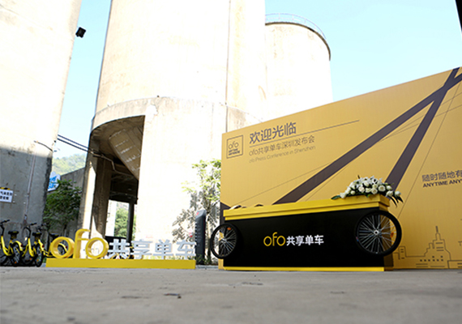
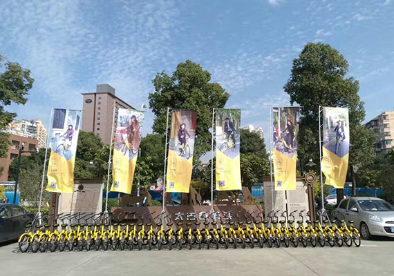
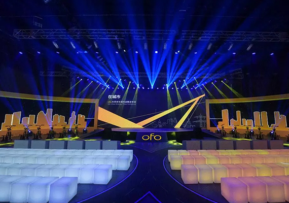

-
2016/ 12/ 9
ofo将于深圳地铁达成战略合作，在深投放700Bike定制版小黄车，日订单达150万
今天，ofo宣布正式登陆深圳，并将与深圳地铁建立战略合作伙伴关系，双方将在多个层面展开密切合作。
-
2016/ 12/ 9
ofo 正式进入广州，与广州海珠区政府开展战略合作，计划年内连接6万辆自行车
今天，ofo在广州召开城市战略发布会，宣布正式登陆广州，将与广州市海珠区人民政府建立战略合作，年内连接6万辆自行车。
-
2016/ 11/ 19
以共享之名，穿过城市去拥抱你
>ofo将向全社会发出“城市大共享”计划的邀请，欢迎全球的自行车品牌与生产商将自行车整车硬件、自行车服务接入 ofo 平台，共同为用户提供差异化、个性化的自行车出行服务。同时，也鼓励个人将自己的闲置自行车共享出来以 1 换 N，换取更多服务。
-
 2016/ 11/ 19
2016/ 11/ 19ofo与700Bike达成合作，原Uber西区北区经理张严琪加入任COO
ofo发布了城市战略，希望在年底连接100万辆车，同时ofo还宣布已经与700Bike达成合作。另外前Uber中国北区西区总经理张严琪已经加入共享单车平台“ofo”，担任COO，与张严琪同期加入ofo的还有Uber其他一些大区经理。
-
 2016/ 11/ 18
2016/ 11/ 18ofo正式开启城市服务，共享经济将是未来趋势
ofo共享单车在京召开城市战略发布会，宣布正式开启城市服务，推出新一代小黄车ofo3.0，并启动“城市大共享”计划。将面向自行车品牌与厂商开展合作，同时接入并共享市民闲置的自行车；与700bike公布达成战略合作，双方将在共享单车领域展开深度合作。
-
 2016/ 11/ 09
2016/ 11/ 09我只想安全地陪你骑过四季
安全从来就不是一个可以讨价还价的话题，更无关乎先后，于 ofo 而言，是已经执行了半年的特殊任务，其实我们只想安全地陪你骑过四季。
-
 2016/ 10/ 15
2016/ 10/ 15每一次改变，只为更好的服务。
从2000辆用户共享车，到8万辆小黄车；从微信端用车，到更加方便的APP；从北大校园走向全国高校；从1.0到2.0时代......我们变了很多，但有一点从未改变：让大家随时随地有车骑。今天，我们选择再次突破：ofo全面升级，进入3.0时代！
-
 2016/ 10/ 10
2016/ 10/ 10ofo共享单车完成1.3亿美元C轮融资
ofo共享单车上线13个月，覆盖200个校园，拥有180万用户，每日提供超过50万次出行服务。上线的一年时间里，ofo共完成了5轮融资。从高频的融资节奏以及商业布局来看，ofo长远战略的部署意识以及踏实干劲，让ofo成为当下最有潜力的创业公司。